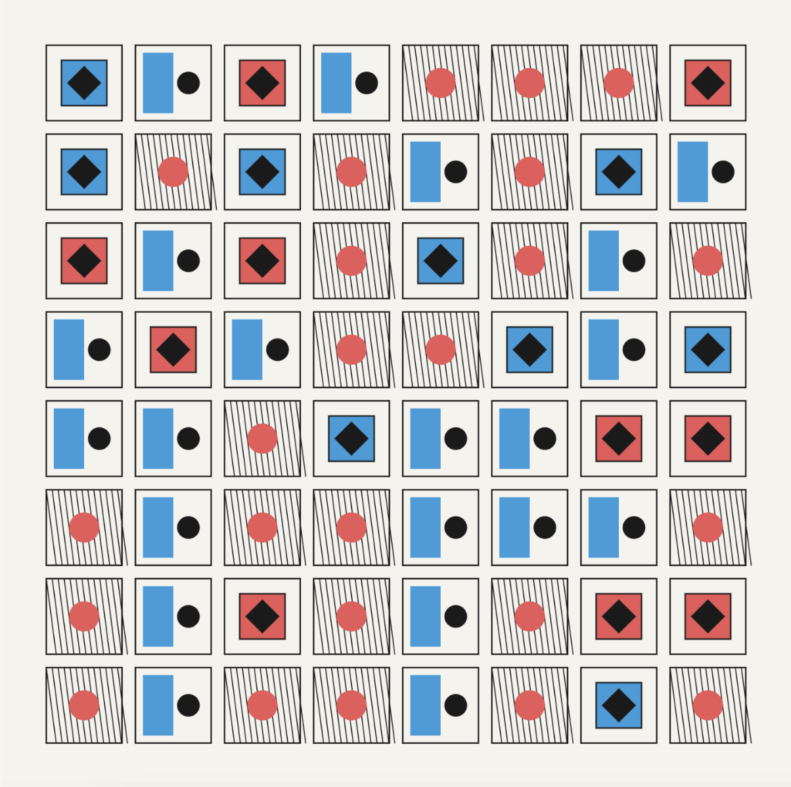
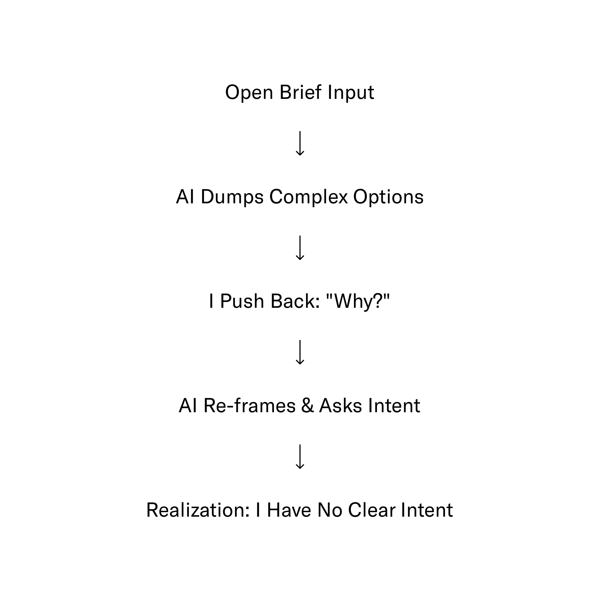
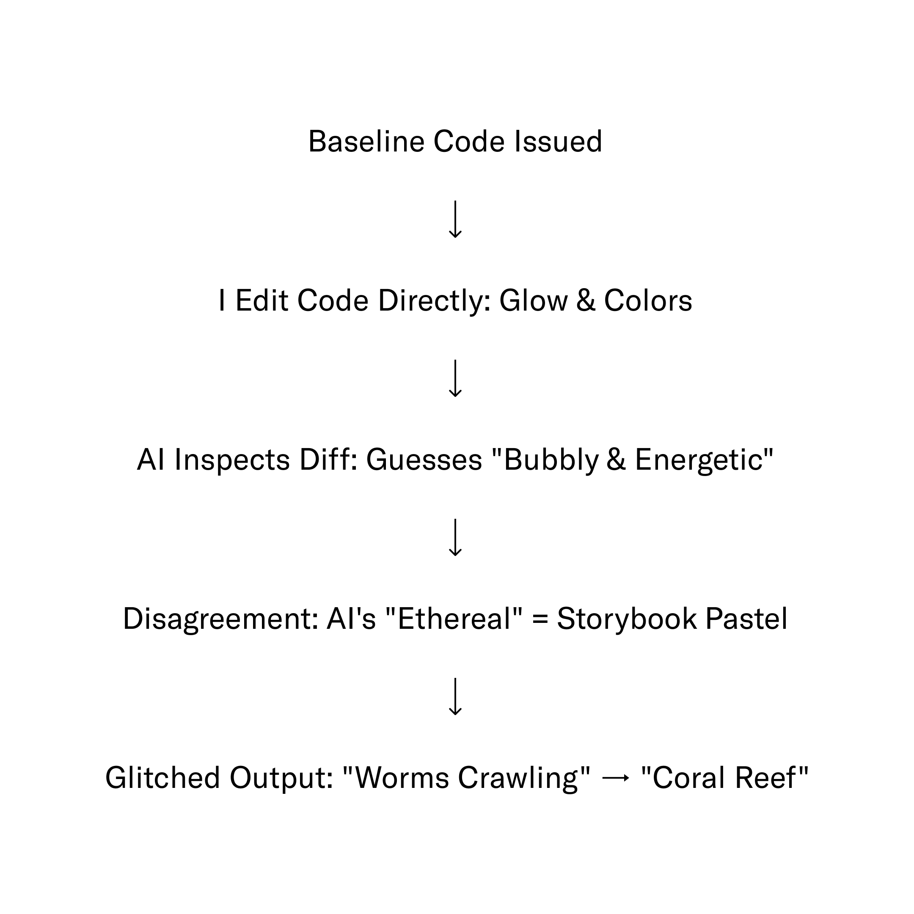
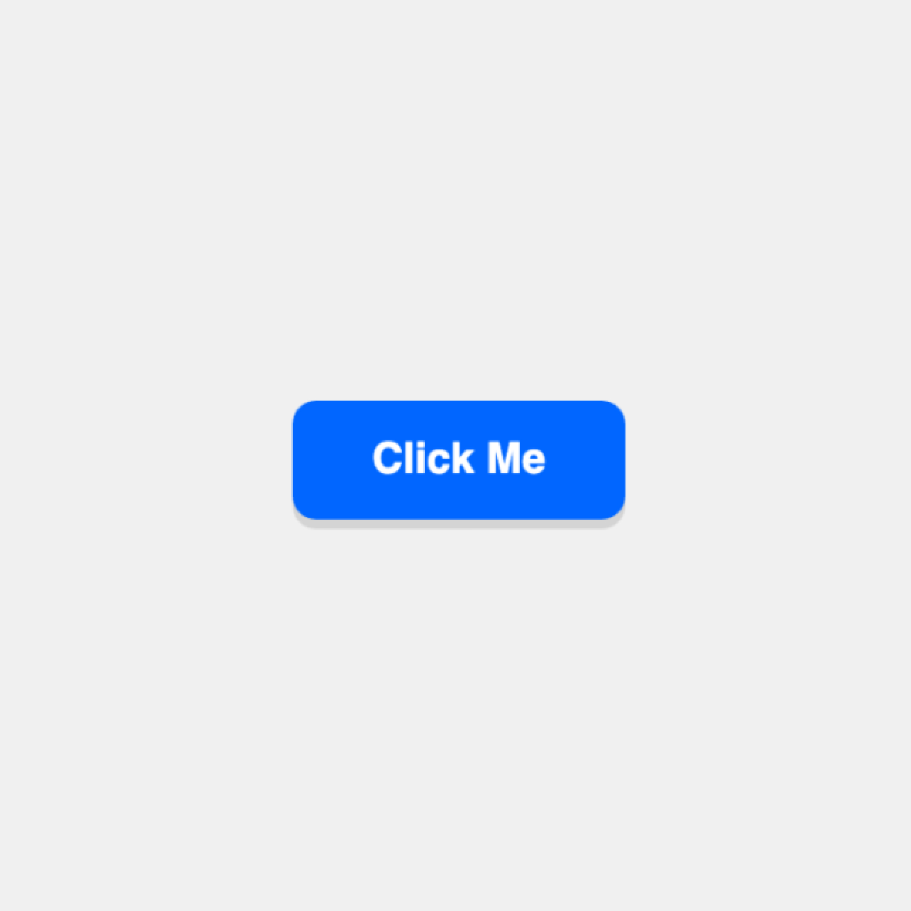
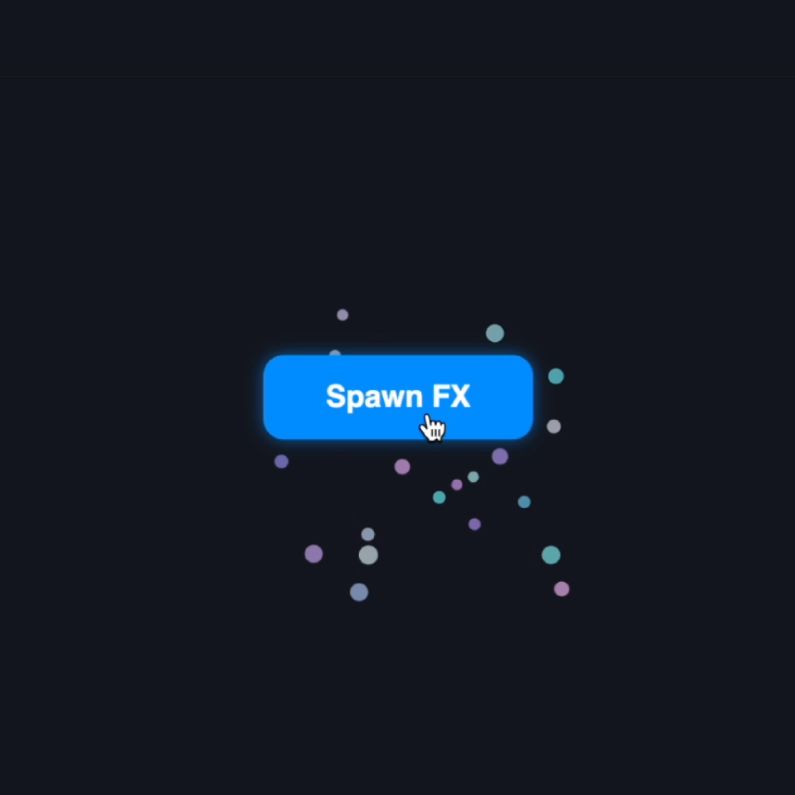
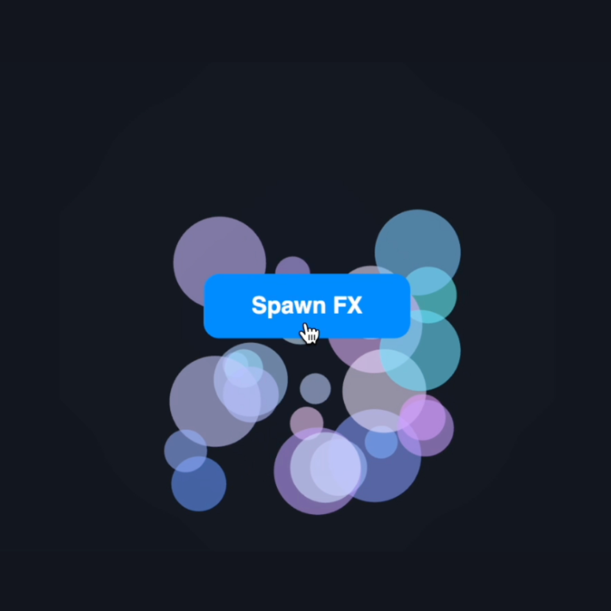
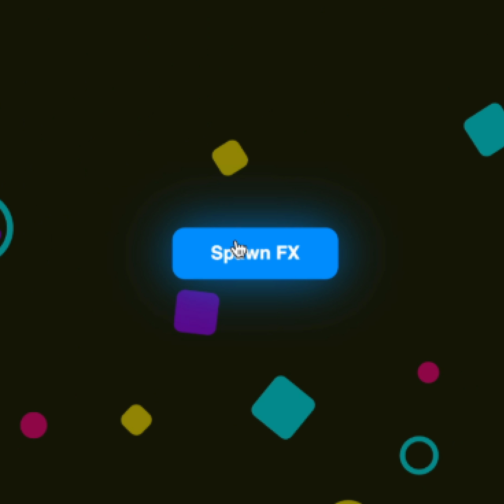
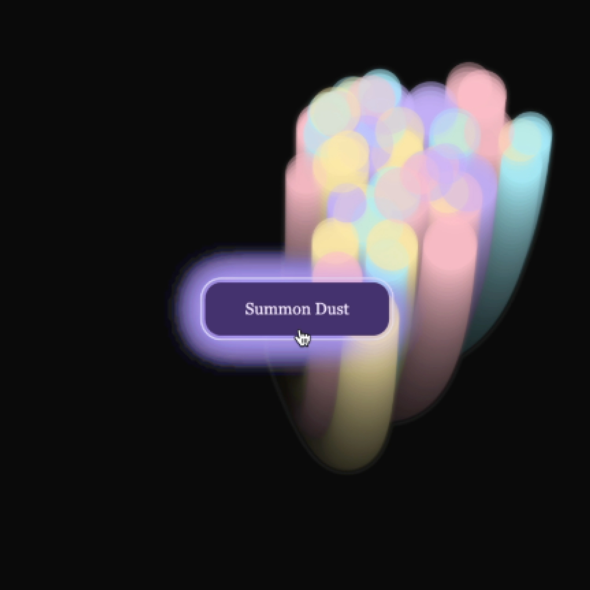
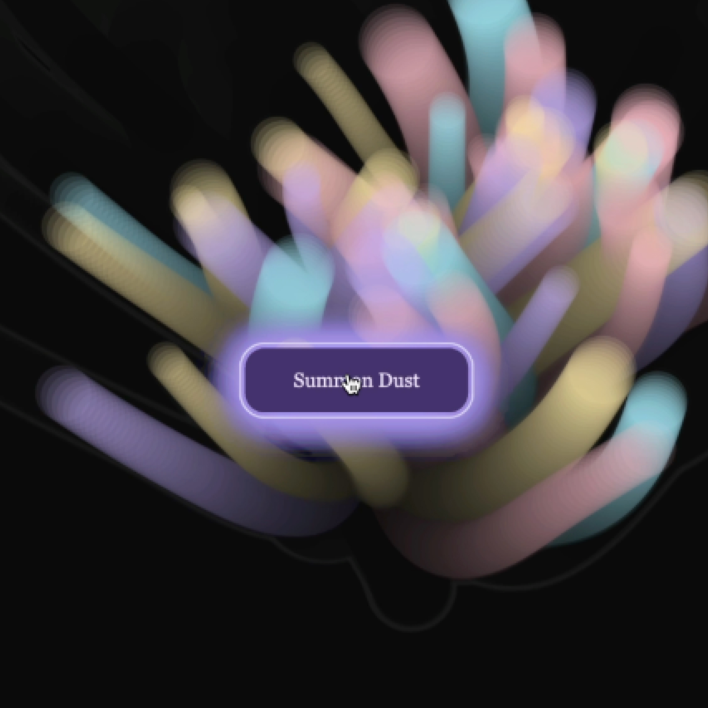

Week 5 · Semester 1
Lost in Translation, Again
This week I wanted to dive deeper into what collaboration actually means, for me specifically, before testing it directly with AI.
Defining Collaboration
What collaboration means to me: 1 + 1 = 100 — when two or more come together, the result should be far bigger than the sum of its parts.
It is an active process that relies on feedback, real-time communication, unexpected outcomes, assisting each other, and allowing completely different ideas to collide.
Google defines it much more plainly: "the act of two or more people or organisations working together to create, complete, or achieve a shared goal."
Comparing my own definition against a standard dictionary definition brought up two core questions that I'm sitting with for this studio:
Does the computer actually have to be creative for us to collaborate? This feels like a live, open question rather than a simple gap to fill. If a system doesn't possess its own creative agency, can the interaction still count as a true partnership, or is it just an advanced form of delegation?
Are human experiences what make us creative? I think yes. Human experience allows us to feel, touch, and contextualise things through lived emotion and physical reality. That visceral layer adds a depth and dimension to creativity that a computer simply doesn't have—and might never be able to replicate.
Boden Re-Read
I went back to Boden's The Creative Mind to get a deeper understanding, since she explores computational creativity directly. Her distinction between H-creativity (historically novel, to all of humankind) and P-creativity (novel just to the individual, regardless of whether others got there first) shifted how I think about creativity — and sparked this week's experiments: let the AI work with me directly, and see if there's creativity there at all.
Two lines from the book stayed with me:
"Because creativity by definition involves not only novelty but value, and because values are highly variable, it follows that many arguments about creativity are rooted in disagreements about value."
"The answer to our opening question, then, is that there are many intriguing relations between creativity and computers. Computers can come up with new ideas, and help people to do so. Both their failures and their successes help us think more clearly about our own creative powers."
At the time, these felt like a point toward understanding what it means to be creative.
Experiment 1
Grid System, with Gemini

Button process.
Approach
I asked Gemini to collaborate on a p5.js piece exploring a grid system, starting from a completely open brief.
Process & Observations
Instead of starting simple, Gemini immediately dumped several heavy directions on me right out of the gate—suggesting motion dynamics, specific visual styles, and complex grid logics all at once. I paused and pushed back, asking why it chose that starting point. It gave a detailed technical breakdown: grids as constraint systems, cell resolution, local coordinate systems, and a "progressive scale" moving from uniform to parametric grids.
That answer triggered a realization. I asked it directly: "You've already given me an outcome I can only react to—how is that collaboration?"
It immediately reframed its approach and asked me to set the intent first. But that was the turning point: I realized I didn't actually have a specific idea in mind to create. The brief was far too open for me to bring anything grounded of my own to the table.

Challenges Faced & Reflection
Initially, I tried to weigh the entire collaboration as a raw effort split—me versus the AI, a literal 0:10 ratio. But sitting with it, I realized that metric is completely irrelevant. It doesn't matter who wrote more lines of code or generated more text; what actually matters is how much agency I felt in the process.
The "0:10, so is this even collaboration?" feeling was very real, but calculating a percentage was measuring the wrong thing entirely. Without a clear intention or parameter set brought by me, I wasn't collaborating—I was just reacting to a machine filling in the void.
Experiment 2
Button
Approach
After the open-brief paralysis in Experiment 01, I started much simpler and more deliberately this time: a p5.js button that spawns particles on click. I wanted to test whether setting a tight, hyper-specific constraint from the beginning would foster a genuine sense of collaboration rather than mere delegation.

Button process.
Process & Observations
Gemini built a baseline featuring a particle burst and console logging feedback, which gave me a satisfying code structure to debug against. Instead of just letting the machine write everything, I jumped in and started editing the code directly—tweaking the canvas sizing, glow intensity, particle count, and color parameters until I landed on a soft, flowy aesthetic I envisioned as magic, ethereal, and space-like.
I then ran a test: I asked Gemini to inspect my code diff and guess what visual changes I had made and why, without giving it any verbal hints. It gave a remarkably confident technical breakdown, accurately tracing the adjustments in my code.
However, its interpretation of my vibe fell completely flat. It read my visual changes as "bubbly and energetic"—a far cry from the ethereal, feathery atmosphere I was attempting to build.
When we tried to negotiate a "middle ground," I resisted. Its suggested tweaks were pushing a narrative I simply didn't agree with. Its default understanding of "ethereal" was incredibly literal and storybook-like (think generic pastels and fairies), whereas my definition was rooted in fluid motion, lightness, and subtle weightlessness.
As we kept pushing parameters back and forth, the visual output briefly turned gross— resembling a chaotic nest of worms crawling out of the button. But the longer I stared at it, the form shifted. The accidental density and organic movement started to look like a living coral reef.






Button iterations 01–06.
Challenges Faced & Reflection
This experiment brought several core realizations into focus:
Translation Loss as the Content: The AI cannot fully read my creative intent because it doesn't process reality the way a human brain does; it infers purely from code diffs and averages its predictions toward the most plausible response. Yet, that friction is precisely what makes working with it compelling. When my message breaks down in translation, what comes back is often an unexpected detour. This directly echoes my Year 2 Art by Telephone project—the message degrading across the channel isn't a bug; the breakdown itself becomes the actual content.
The Illusion of Surprise: The shift from "gross worms" to "coral reef" felt like a genuine moment of AI agency at first. But stepping back, I realized I had expected the machine to generate something entirely out-of-this-world, only to be handed something deeply familiar. It wasn't inventing a new aesthetic language—it was just recombining existing visual data.
This marks a clear pattern converging across my research: whether it's my kerning agent, Gemini on a grid, or particle systems on a button, current AI systems lack the grounded context to push beyond exploratory adjustments into truly transformational territory without flattening into an average.
Unresolved Question (Carrying Forward)
Is the gap between my aesthetic taste and the AI's output simply a prompt engineering issue—a matter of feeding it richer context (fixable)? Or is it fundamentally a "skill issue"—where the AI lacks the refined, experience-built taste, tactile nuance, and emotional intuition that a human collaborator naturally brings to the table?
I'm intentionally leaving this open to test in my next iteration.
Moving Forward
Andreas asked me to focus on feedback loop. That's where Week 5 ends, and where I started redrawing a mind map on what I was actually curious about — picked up in Week 6.